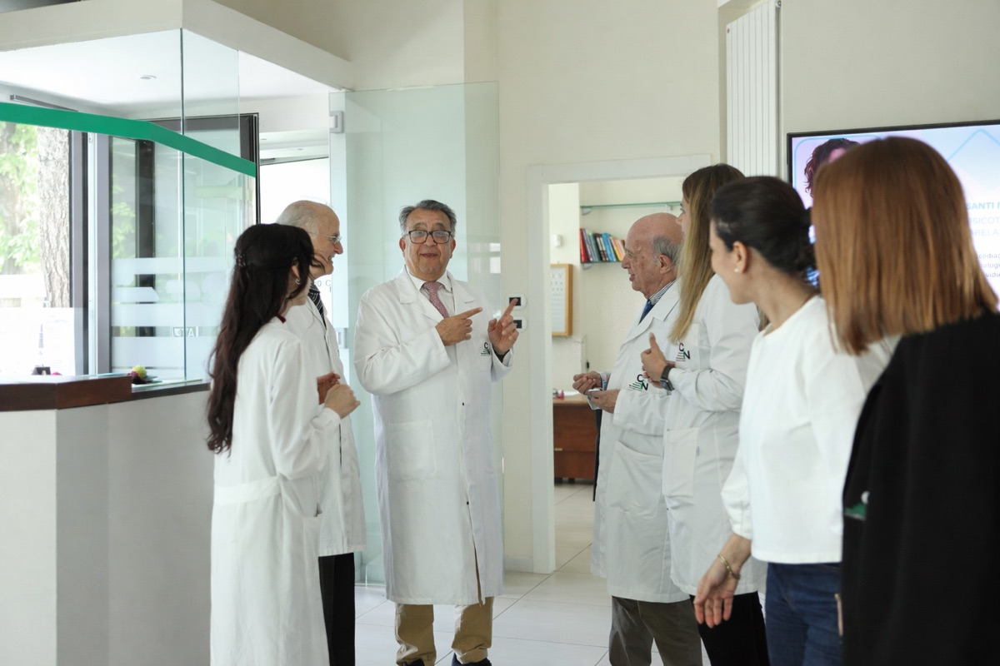
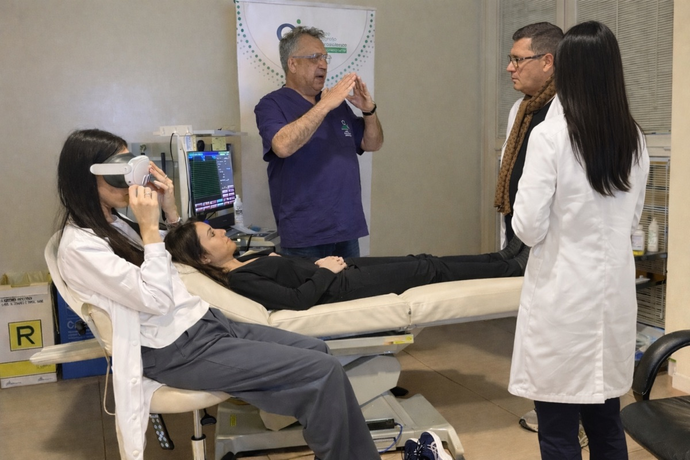
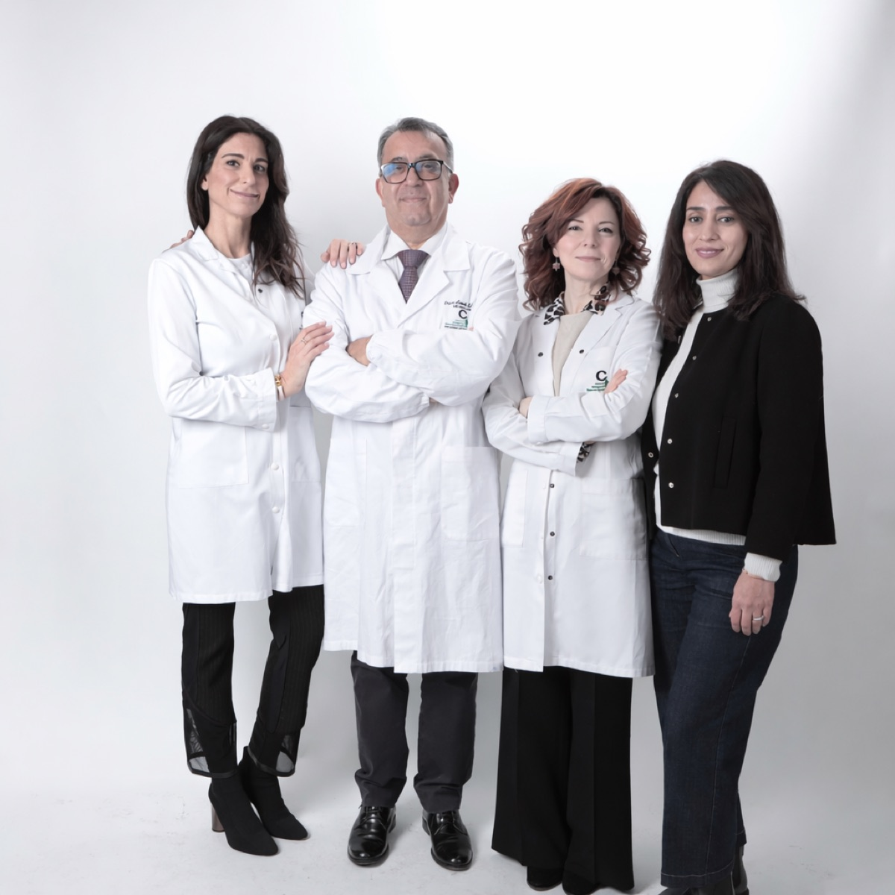

Neurologo · Direttore Sanitario CIN · Rimini
"Portare in Italia le tecniche più avanzate della neurologia internazionale."

Il Dott. Saeid Saadi ha completato la propria formazione medica in Italia, conseguendo la laurea in Medicina e Chirurgia e la specializzazione in Neurologia. La sua carriera prende una svolta decisiva quando decide di approfondire la propria formazione negli Stati Uniti, dove entra in contatto con i centri di ricerca neurologica più avanzati al mondo.
Negli USA il Dott. Saadi apprende e affina le tecniche di neurofeedback e biofeedback, all'epoca ancora poco diffuse in Europa. Grazie a questa esperienza sul campo, diventa uno dei primi professionisti a introdurre queste metodologie in Italia, aprendo la strada a un approccio clinico innovativo che integra neurologia classica e neuroscienze applicate.
Le tecniche di neurofeedback da lui introdotte sono oggi riconosciute e utilizzate anche presso l'Istituto Neurologico Carlo Besta di Milano, uno dei centri di eccellenza neurologica più importanti d'Italia — a testimonianza del rigore scientifico e del valore clinico del percorso avviato dal Dott. Saadi.
Nel 2013 fonda a Rimini il Centro Integrato Neuroscienze (CIN), un poliambulatorio pensato per offrire una presa in carico globale del paziente neurologico. Il CIN ottiene successivamente l'accreditamento ANIRCEF (Associazione Neurologica Italiana per la Ricerca sulle Cefalee) come Centro Cefalee, riconoscimento che attesta la qualità dei protocolli diagnostici e terapeutici adottati.
Oggi il Dott. Saadi esercita come Direttore Sanitario del Poliambulatorio CIN, dove coordina un team multidisciplinare e segue direttamente i pazienti con patologie neurologiche complesse, disturbi funzionali, cefalee e condizioni che richiedono un approccio integrato tra neurologia, psichiatria, psicologia e fisiatria.
Percorso accademico in Italia: laurea in Medicina e Chirurgia e specializzazione in Neurologia presso ateneo italiano. Solide basi scientifiche che definiscono il metodo clinico rigoroso del Dott. Saadi.
Periodo di formazione presso centri neurologici statunitensi di riferimento. Apprendimento delle tecniche di neurofeedback e biofeedback — metodologie all'avanguardia ancora poco conosciute in Europa in quegli anni.
Al ritorno dagli USA, il Dott. Saadi introduce il neurofeedback e il biofeedback nella pratica clinica italiana. Diventa uno dei pionieri di questi strumenti in ambito neurologico nel nostro Paese, contribuendo alla loro diffusione scientifica.
Il Dott. Saadi fonda a Rimini il Poliambulatorio CIN (Centro Integrato Neuroscienze), con la visione di creare un centro di cura neurologica multidisciplinare capace di rispondere in modo globale alle esigenze del paziente.
Il Poliambulatorio CIN ottiene l'accreditamento ANIRCEF come Centro Cefalee, riconoscimento nazionale che attesta l'eccellenza dei protocolli adottati per la diagnosi e il trattamento delle cefalee e delle emicranie.
Il Dott. Saadi è oggi un punto di riferimento per i disturbi neurologici funzionali, le cefalee e la neurofisiologia clinica. Dirige il team CIN e continua ad aggiornarsi sulle frontiere della ricerca neurologica internazionale.

La visione clinica del Dott. Saadi si fonda sulla convinzione che il paziente neurologico non possa essere trattato in modo frammentato. Ogni sintomo va letto all'interno della storia complessiva della persona, integrando strumenti diagnostici avanzati con un ascolto profondo e un lavoro di squadra tra specialisti.
Al CIN questa filosofia si traduce in un modello di cura concreto: neurologi, psichiatri, psicologi, fisiatri e nutrizionisti collaborano in modo coordinato, condividendo informazioni e definendo insieme i piani terapeutici più efficaci per ogni singolo paziente.
Ogni visita inizia da una raccolta approfondita della storia del paziente, senza fretta.
Valutazione neurologica completa, con esami strumentali mirati e interpretazione clinica precisa.
Neurofeedback, biofeedback e tecnologie avanzate integrate nei protocolli terapeutici.
Team di specialisti che lavora in sinergia per una presa in carico globale della persona.
Professionisti di eccellenza uniti da una visione comune: la cura integrata del paziente neurologico.

Neurologo e Direttore Sanitario del Poliambulatorio CIN. Specializzato in disturbi neurologici funzionali, cefalee, elettromiografia e neurofisiologia clinica. La sua formazione internazionale e la sua esperienza clinica ventennale lo rendono un punto di riferimento per la neurologia specialistica nell'area romagnola.
Il Poliambulatorio CIN si avvale inoltre della collaborazione di specialisti in psichiatria, psicologia clinica, fisiatria e nutrizione, garantendo una presa in carico truly multidisciplinare per ogni paziente.